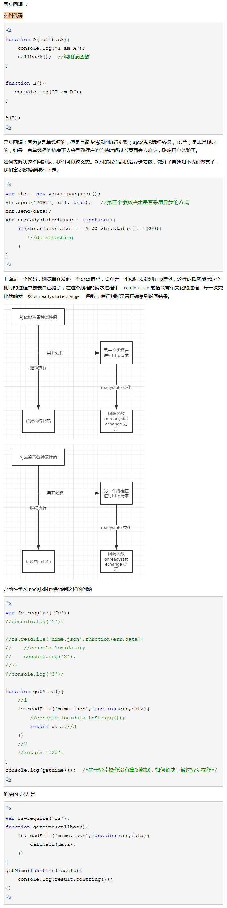

异步编程方法
计时器
JS里面最基础的异步实现就是调用setTimeout, setInterval。
回调函数
- 优点
- 简单、容易理解和部署
- 缺点
- 不利于代码的阅读和维护，各个部分之间高度耦合（Coupling），流程会很混乱，而且每个任务只能指定一个回调函数。
回调并不一定就是异步。它们之间并没有直接关系。简单区分 同步回调 和 异步回调

事件监听
采用事件驱动模式。任务的执行不取决代码的顺序，而取决于某一个事件是否发生。
- 优点
- 比较容易理解，可以绑定多个事件，每一个事件可以指定多个回调函数，而且可以去耦合，有利于实现模块化。
- 缺点
- 整个程序都要变成事件驱动型，运行流程会变得不清晰。
发布/订阅（又称观察者模式）
上面地址为实现这种模式的插件，常用插件列举如下：
- Tiny Pub/Sub
-
- jquery-pubsub
-
异步操作的流程控制
以下三种流程控制的讲解及代码请访问上面的地址
- 串行执行
- 一个任务完成以后，再执行另一个。这就叫串行执行。
- 并行执行
- 即所有异步任务同时执行
- 并行与串行的结合
- 所谓并行与串行的结合，就是设置一个门槛，每次最多只能并行执行n个异步任务，这样就避免了过分占用系统资源。
<script>标签异步加载
其它